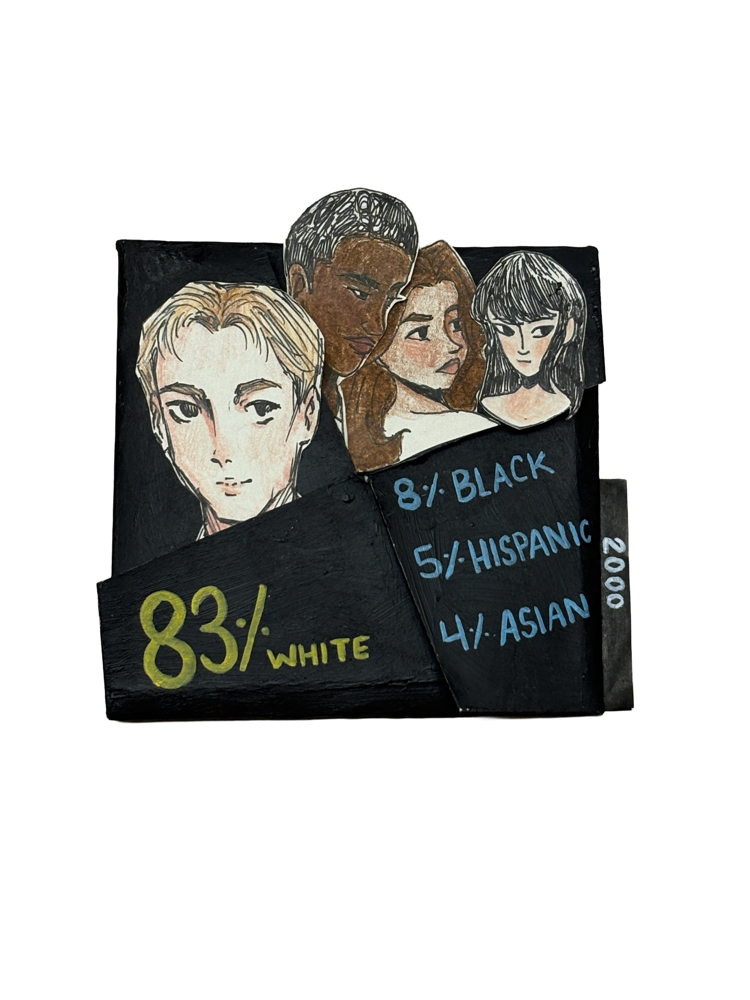

In the 2000's, StuyTown transitioned from a older, predominantly White, long term middle class community into a younger mix of families, roommates, and students. The population was shifting and it was becoming younger, but at the same time, the cost of living at StuyTown was also increasing, moving away from its post-war veteran and blue collar middle class roots, it was becoming more middle to upper-middle class. Racially, it still remained majority White, at around 83%, but there was an increase in diversity as Black residents made up approximately 8% by 2000, Asians 4%, and Hispanic/Latino 5%.